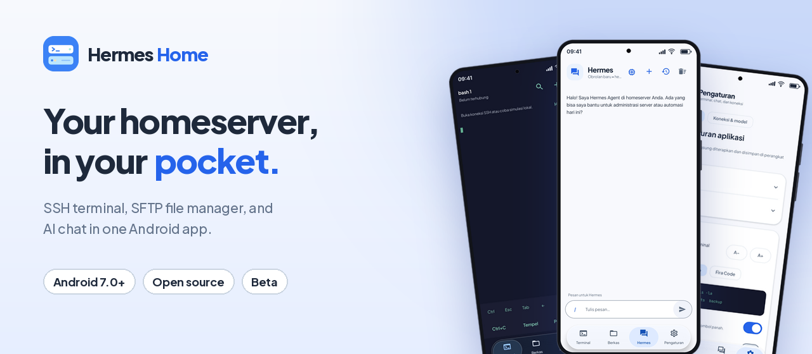
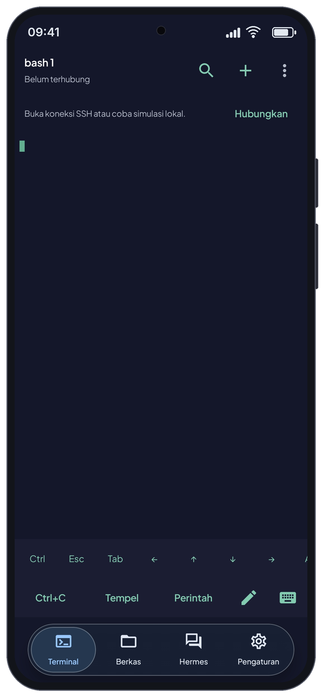
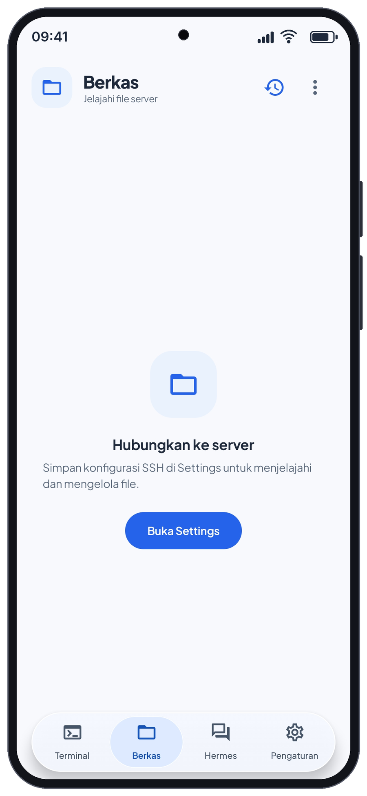
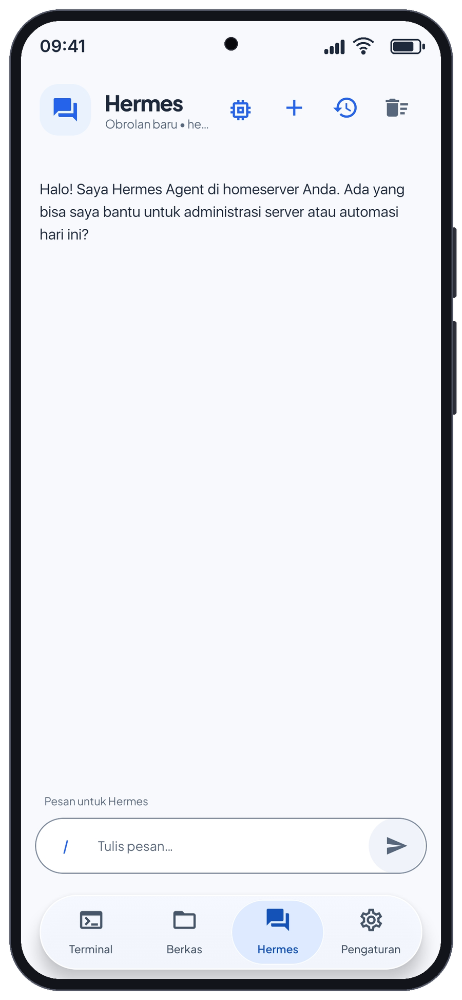
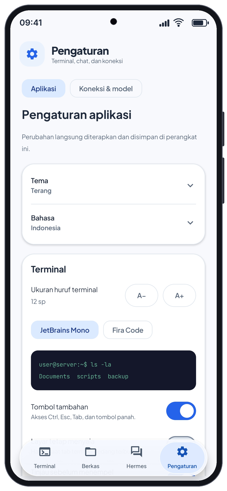
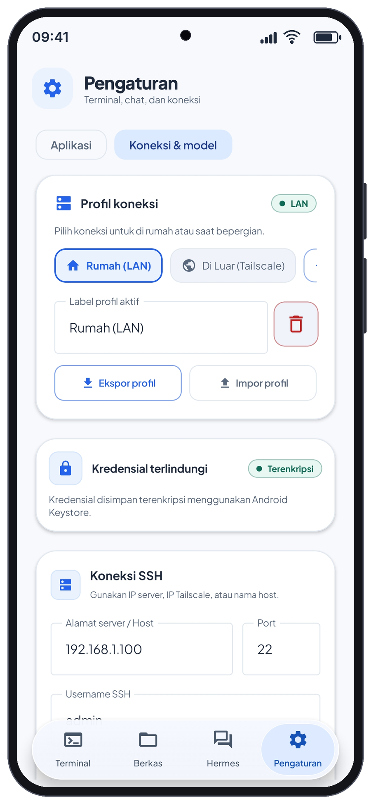

Terminal
Sesi SSH interaktif, pintasan terminal, pencarian output, dan perintah tersimpan.
Klien Android untuk homeserver
Terminal SSH, pengelola file SFTP, dan Hermes Chat dalam satu aplikasi Android. Hubungkan ke server dan layanan yang Anda pilih sendiri.
Unduhan publik saat ini masih beta 1.3.1. Source 1.3.2 sedang disiapkan; belum tersedia sebagai APK rilis.

Empat tab, satu klien
Hermes Home menghubungkan ponsel ke infrastruktur Anda. Aplikasi ini tidak menyediakan homeserver, VPN, akun AI, kredit API, atau cloud bawaan.
Sesi SSH interaktif, pintasan terminal, pencarian output, dan perintah tersimpan.
Jelajahi server melalui SFTP, cari file, lalu kelola transfer dari Android.
Tanyakan tentang perintah atau file dengan model dari provider pilihan Anda.
Atur koneksi, provider, profil, bahasa, tema, terminal, dan perilaku chat.
01 / Terminal SSH
Kelola sampai lima sesi SSH sekaligus. Berpindah tab tidak langsung memutus sesi; foreground service menampilkan notifikasi selama koneksi aktif.
Login SSH memakai username dan password. Pengaturan autentikasi public key belum tersedia. Simulasi lokal hanya untuk mencoba antarmuka, bukan shell server.
Sesi tetap dapat terputus karena jaringan, server, pembatasan Android, force-stop, atau task aplikasi dihapus.

02 / Berkas melalui SFTP
Jelajahi folder lewat baris selebar layar, breadcrumb, atau input path. Pilih file lokal untuk diunggah di latar belakang, atau unduh file ke folder pilihan Android.
Download folder belum tersedia. Download tidak otomatis lanjut setelah proses aplikasi dimatikan. Retry upload mengulang file yang belum selesai dan tidak menjamin lanjut dari byte terakhir. Penghapusan folder yang masih berisi belum didukung.
Pencarian tidak mengikuti symlink dan berhenti pada 5.000 hasil, 10.000 folder, kedalaman 64 tingkat, atau anggaran pemindaian 20 detik. Network call yang tersendat dapat berjalan sampai connection timeout; hasil parsial dan folder yang tidak dapat dibaca diberi penanda.
Rincian SFTP di README ↗
03 / Hermes Chat
Atur endpoint dan/atau API key sendiri. URL, key, dan model disimpan per provider; akses, biaya, kuota, serta kualitas jawaban mengikuti layanan yang Anda pakai.
/model, atau Settings. Cari katalog, lihat model aktif, dan gulir daftar pada jendela pemilih tetap; /model nama membuka pencarian dengan filter tersebut.Perintah chat
/model · /model nama · /effort · /history · /status · /profile · /clear · /help/effort low, medium, high, atau default menyimpan pilihan untuk pesan berikutnya. Default mengikuti model. Aplikasi hanya mengirim field effort untuk provider dan keluarga model yang dikenali; model tak dikenal dan endpoint custom tidak menerima override dari aplikasi.
Dukungan berbeda antar model dan API. Jangan menganggap semua model atau 9router menerapkan pilihan ini. /status menampilkan konfigurasi tersimpan, bukan pemeriksaan kesehatan server langsung.

Koneksi dan model
Hermes Home bertindak sebagai klien. Akun provider, API key, kredit, izin model, dan ketersediaan layanan diatur langsung oleh Anda. Pemeriksaan koneksi AI mengirim permintaan singkat ke model dan dapat memakai kuota.
Server custom memakai API yang kompatibel dengan OpenAI. Dukungan endpoint, field, dan format respons bisa berbeda antar server. Untuk endpoint AI publik, gunakan HTTPS.
04 / Pengaturan
Pilih tema terang, gelap, atau sistem; bahasa Indonesia, Inggris, atau bahasa sistem. Terminal tetap memakai kanvas gelap. Pengaturan chat dan terminal tersimpan di perangkat. Aplikasi meminta refresh rate tertinggi yang didukung pada resolusi aktif, termasuk 120 Hz bila tersedia; hasil aktual bergantung pada perangkat dan Android.

Navigasi bawah mengambang memuat Terminal, Berkas, Hermes, dan Pengaturan. Ukuran font terminal 10–24 sp dan teks chat 12–22 sp.

Simpan beberapa profil, misalnya LAN rumah dan Tailscale. Profil backup dilindungi password, memuat kredensial, dan tidak memindahkan riwayat chat.
Buka kunci secara manual dengan biometrik atau kredensial perangkat bila didukung. Kredensial, setelan provider, isi chat, dan jurnal riwayat transfer dienkripsi memakai kunci Android Keystore; preferensi tampilan disimpan terpisah.
Isi chat, file pilihan, dan permintaan koneksi dikirim ke layanan yang Anda atur; router dapat meneruskan data ke provider lain. Tinjau kebijakan penyedia. Tailscale/VPN dipasang dan dikonfigurasi terpisah. Ekspor profil berisi kredensial dan perlu disimpan dengan aman.
Persyaratan dan setup
Unduh APK bertanda tangan dari GitHub Releases. Android mungkin meminta izin instalasi untuk browser atau file manager.
Di Settings, masukkan host, port, username, dan password SSH. Alamat pada screenshot hanyalah contoh.
Bandingkan fingerprint host key dengan sumber tepercaya sebelum menerima kunci SSH.
Pilih provider, simpan endpoint/API key/model, lalu gunakan pemeriksaan koneksi AI.
Rilis publik
Ini APK Hermes Home terbaru yang saat ini tersedia di GitHub Releases. Statusnya beta, belum rilis stabil.
Unduh APK beta 1.3.1 Catatan rilis dan checksum ↗PR #2 sudah tergabung. Fitur dan tampilan di halaman ini mengikuti source terbaru. Kandidat signed beta masih menunggu pemeriksaan update dengan data lama dan pemeriksaan di ponsel; 1.3.2 belum tersedia untuk diunduh.
Lihat changelog ↗Untuk mempertahankan data, pasang APK rilis dengan package com.aistudio.homeserver.thns dan signing identity yang sama di atas aplikasi utama. Jangan uninstall atau hapus data. Android hanya dapat mempertahankan data jika identitas itu cocok.
Preview menggunakan package terpisah, com.aistudio.homeserver.thns.preview, sehingga dapat muncul sebagai aplikasi kedua. Data preview tidak otomatis digabung dengan aplikasi utama. Backup profil hanya memindahkan profil koneksi, bukan seluruh riwayat chat.
Screenshot aplikasi
Layar Files yang belum tersambung dan nilai alamat pada profil adalah contoh antarmuka. Screenshot ini bukan bukti server aktif dan alamatnya bukan layanan yang disediakan proyek. Tekan gambar untuk membuka ukuran aslinya.
FAQ
Hermes Home adalah klien Android untuk server dan layanan yang Anda konfigurasi sendiri.
Tidak. Anda memerlukan server sendiri untuk SSH/SFTP dan mengatur endpoint atau akun AI sendiri untuk chat. Hermes Home tidak menyediakan cloud, akun AI, API credit, atau layanan VPN.
Bisa, selama ponsel dan server sudah berada di jaringan yang dapat saling menjangkau. Tailscale atau VPN lain dipasang dan dikonfigurasi terpisah.
9router atau server custom yang kompatibel dengan OpenAI, Google Gemini, OpenAI, Claude/Anthropic, dan OpenRouter. Anda mengatur URL, key, dan model sendiri.
Tidak. Pilihan disimpan untuk pesan berikutnya dan nilai default mengikuti model. Field hanya dikirim ke provider dan keluarga model yang dikenali; model tak dikenal serta endpoint custom tidak menerima override. Dukungan juga bergantung pada model/API.
Berpindah tab tidak langsung memutus sesi. Foreground service menjaga sesi dalam lingkup aplikasi dan menampilkan notifikasi, tetapi jaringan, server, pembatasan Android, force-stop, atau penghapusan task dapat memutusnya.
Pasang rilis bertanda tangan yang sama package dan signing identity-nya di atas aplikasi lama. Jangan uninstall atau hapus data. Source 1.3.2 masih menunggu uji update tersimpan di perangkat sebelum beta baru dipublikasikan.
Aplikasi utama dan preview memakai package berbeda. Preview dapat dipasang berdampingan untuk pengujian, tetapi datanya terpisah dan tidak otomatis bergabung dengan aplikasi utama.
Download folder belum ada dan download file tidak otomatis melanjutkan setelah proses aplikasi dimatikan. Retry upload tidak menjamin melanjutkan dari byte terakhir; folder yang masih berisi tidak dapat dihapus. Pencarian juga dibatasi hasil, kedalaman, folder, dan waktu.
Belum. Rilis publik yang tersedia saat ini adalah 1.3.1-beta.1. Source 1.3.2 sudah tergabung di main, tetapi signed beta-nya masih menunggu pemeriksaan update dengan data lama dan pemeriksaan di ponsel.